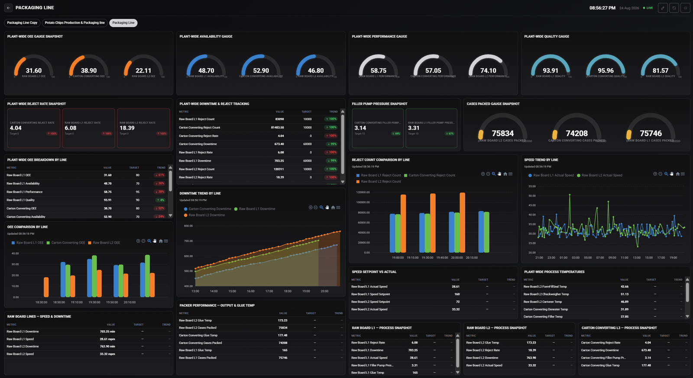
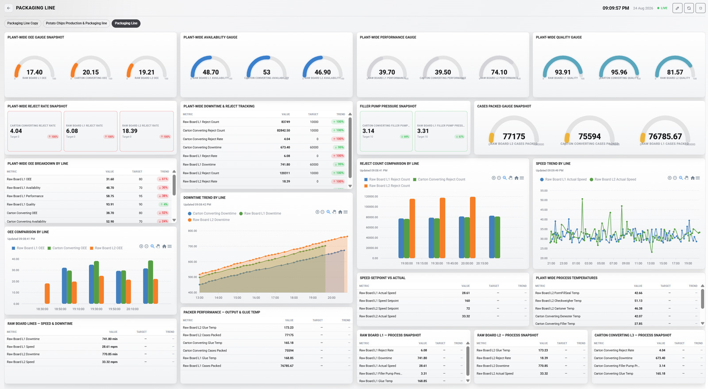

can find the root cause of a shop-floor issue immediately.
Industrial intelligence. On your premises.
Operational Technology to Operational Intelligence
We believe operational intelligence has to come from your own data and your own priorities, guided by the people who actually run the plant. FactoSense connects to any machine, any PLC, any vendor, and keeps everything running on your own premises.
15 min
first edge configured remotely
10-15 yrs
manufacturing software experience
FactoSense platform preview
ONLINE
OEE
86%
Availability
94%
Edge uptime
99%
Machine sourceOPC-UA
Data locationon premises
Insight layerlive
Why FactoSense
Every plant is different.
What matters most on your floor is not something a generic dashboard was ever built to know.
Every production floor has its own critical machines, performance targets and operating patterns. FactoSense helps your team turn those local priorities into clear, real-time intelligence.
How FactoSense starts
01
Connect live data
Get machine signals flowing from the floor.
02
Define priorities
Focus on the measures your team already trusts.
03
Build intelligence
Shape dashboards and reports around your operation.
The operations gap
Most plants are not short on effort. They are short on immediate answers.
May 2026 survey · 600+ manufacturers
A 2026 L2L survey of 600+ U.S. manufacturing leaders points to the same bottleneck FactoSense is built around: disconnected shop-floor data, delayed reporting and root-cause visibility that arrives too late.
say critical know-how disappears when experienced staff leave.
are held back by delayed reports that slow production decisions.
of frontline supervisors lose up to 4 hours per shift reconciling data.
of plants still rely on manual frontline data entry.
of workers juggle multiple systems to get through daily operations.
say poor data quality and integration limit what AI can do.
FactoSense is designed for this missing layer.
Live machine context, local data ownership and operational history in one place, so supervisors can move from “what happened?” to “why did it happen?” faster.
OEE reality check
Even strong individual scores compound into a lower operating result.
If availability, performance and quality are each 90%, the line does not run at 90% OEE. The multiplication lands at 73%.
90%Availability
×
90%Performance
×
90%Quality
=
73%OEE
55-60%typical manufacturing OEE
85%world-class benchmark
~6%manufacturers sustain 85%+
Sources L2L manufacturing data survey, May 2026 LeanProduction OEE benchmarks Evocon world-class OEE data
Data sovereignty
Your data never leaves your floor.
FactoSense captures, processes and stores operational data locally, so your factory stays in control.
Your premises
Machines
Edge device
FactoSense processing
Dashboards + intelligence
Connectivity
Built for Your Industrial Ecosystem
Any machine. Any PLC. Any vendor.
If it speaks OPC-UA, we connect to it. FactoSense works with the PLCs, automation vendors, machines and protocols already on your floor.
The platform
Everything in this section is live today.


Monitor edge infrastructure.
Your connected asset registry.
Map machine data without code.
Turn live signals into operational views.
Operational reporting from live production data.
Roadmap
Visibility today. Intelligence on your own data next.
A practical path from live visibility to better decisions, built on operational history your team owns.
Connect and monitor
Live operating visibility, assets, dashboards, users and workspaces.
Report and optimize
Dynamic reporting, OEE, threshold rules, alarms, storage and cross-site context.
AI on your data, on your premises
Downtime risk, component health, maintenance recommendations and answers drawn from your own operational history.
About
15+ years building manufacturing software.
FactoSense is built by Funoon Lab. We have spent 15+ years making software for manufacturers: people who have no patience for anything that does not work on day one.
FactoSense is what we would build if we started over: everything we have learned, none of the vendor lock-in, none of the compromises.
info@funoonlab.comLet's connect your first machine.
Fifteen minutes. No commitment. See your own data live.